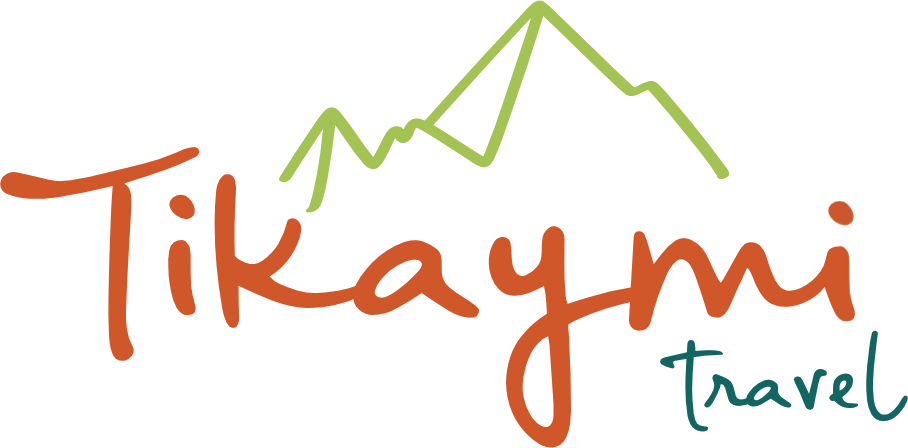

Give your body the first afternoon. No museums, no long walks.
Dry mountain air dehydrates faster than you notice.
Soups and small portions sit better on the first evening.
Two nights in the Sacred Valley before the city is the simplest way to make the altitude easier.
Keep your first afternoon empty. Everything else fits around it.
Tell us when you arrive and how long you have. We'll order the route so your first days are the easy ones.
Plan your trip with usRegálale a tu cuerpo la primera tarde. Sin museos ni caminatas largas.
El aire seco de la montaña deshidrata más rápido de lo que notas.
Las sopas y las porciones pequeñas caen mejor la primera noche.
Dos noches en el Valle Sagrado antes de la ciudad son la forma más simple de llevar mejor la altura.
Deja libre tu primera tarde. Todo lo demás se acomoda alrededor.
Cuéntanos cuándo llegas y cuántos días tienes. Ordenamos la ruta para que los primeros sean los más suaves.
Planifica tu viaje con nosotros